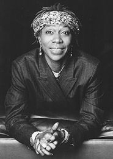

Qui sont ils
Le Black Panther Party (à l'origine le Black Panther Party for Self-Defense) est un mouvement révolutionnaire de libération afro-américaine d'inspiration marxiste-léniniste et maoïste, formé en Californie le 15 octobre 1966 par Bobby Seale et Huey P. Newton

La naissance du mouvement
Le Black Panther Party est le fruit de la rencontre de deux jeunes militants de la cause noire, Huey P. Newton et Bobby Seale, à Oakland dans la région de la baie de San Francisco en Californie. Selon les sources, les deux hommes se seraient rencontrés en 19623 au Merritt College d’Oakland auquel Newton s'était inscrit en droit4 ou lors de conférences organisées par l’Afro-American Association (AAA), une association née sur le campus de Berkeley en 1961 dont l’audience était importante dans le sud de la Californie. Son leader, Donald Warden, était l'une des figures locales de la communauté noire Dans la première quinzaine d’octobre 1966, ils rédigent un programme en dix points — le Ten-Point Program (en), véritable plateforme de démonstration idéologique propre au Black Panther Party — qui s'inspire directement des préoccupations de la population et vise à être aisément compréhensible par les moins instruits11. Il s’agit de l’acte de naissance du Black Panther Party pour l'Autodéfense. Seale en devient le président, Newton le « ministre de la défense ». Le mouvement s'ancre dès ses origines dans une perspective anti-capitaliste et internationaliste
Les femmes "epines dorsales" du Black Panther Party
Les femmes sont pourtant l’épine dorsale de cette avant-garde. Les plus célèbres se nomment Elaine Brown, Katherine Cleaver, Ericka Huggins ou Assata Shakur mais ce sont des milliers de militantes qui ont porté ce parti, dépassant les 60 % parmi les activistes. D’emblée, elles rejoignent en masse une organisation qui porte le message de l’auto-détermination (pour les Noirs mais aussi, en abîme, pour les femmes de couleur) et met en place des politiques sociales pour les quartiers, parmi lesquels les repas gratuits pour les enfants, les cliniques et les écoles gratuites, les soins apportés aux prisonniers comme aux personnes âgées.
Mais il faudrait se garder de croire que la division des tâches était genrée, aux hommes les fusils, aux femmes l’éducation des enfants. Les sœurs elles aussi sont armées et si le comité central du BPP voulut un temps les nommer « Pantherettes », elles affirmèrent fermement leur pleine identité de «Panther».
Engagée à 16 ans dans le parti, Tarika Lewis en deviendra par exemple une figure déterminante, offrant notamment avec ses dessins engagés dans le journal « Black Panther » une image inédite de la combattante, armée de sa chevelure naturelle et d’un fusil, guère moins redoutable que ses camarades masculins. Défiant ces derniers de l’égaler dans le maniement des armes, Lewis gravît les échelons de l’organisation et redéfinît l’image de la femme noire qui combat sur tous les fronts de l’injustice raciale. Que les femmes noires aient le pouvoir, dans l’organisation révolutionnaire mais également dans le monde de demain à inventer fit dire à Ericka Huggins, « si vous étiez une Black Panther, vous étiez une féministe »

Des agents ont été payés pour devenir membre du BPP, pour perturber son travail et pour pousser ses membres à se mettre hors-la-loi. Il permet de récolter un maximum d’informations et de se tenir au courant au jour le jour. Le FBI a orchestré la désinformation et la manipulation par la publication de fausses informations dans les médias pour briser les soutiens au BPP, par l’envoi de lettres anonymes afin de créer des divisions au sein du BPP. Cela a permis la création d’un climat de suspicion entraînant des tensions internes au BPP, et des tensions avec d’autres organisations entraînant parfois une guerre ouverte. Le FBI s’est livré au harcèlement à travers le système légal : des officiers de police donnent de faux témoignages, fabriquent des preuves pour arrêter et faire emprisonner des membres du BPP. Les FBI a directement usé de violences extra-légales : le FBI et la police menacent et provoquent des assauts, du vandalisme, des bagarres pour effrayer et pour perturber le mouvement. Au total, 38 militants du BPP ont été tués durant l’année 1970 suite à des raids organisés par la police contre les bureaux du parti.

Les Pionniers
Afeni Shakur |
||||
Eldrige Cleaver |
 |
 |  |
Huey Percy Newton |
Angela Davis |
 |
 |
 |
Assata Shakur |
Bobby Seale |
En 1973 la plupart des cellules avaient été anéanties, la plupart des combattants tués ou arrêtés. A la mi-70 on consolida les restes du BLA par le BLA-Coordinating-Committee. Une minorité forma sa propre organisation en 78, la Revolutionary Task Force avec le soutien d’ancien Weathermen. Il y avait donc des activistes noirs et blancs, dans le but d’une ‘modification révolutionnaire et d’un processus croissant d’unification‘. Assata Shakur, une des fondatrices de la BLA, fut libérée de sa prison par un commando de cette organisation et se réfugia à Cuba. Cette action fut extrêmement populaire. Sur de nombreux murs de ghettos, on pouvait lire ‘Assata is welcome here‘.